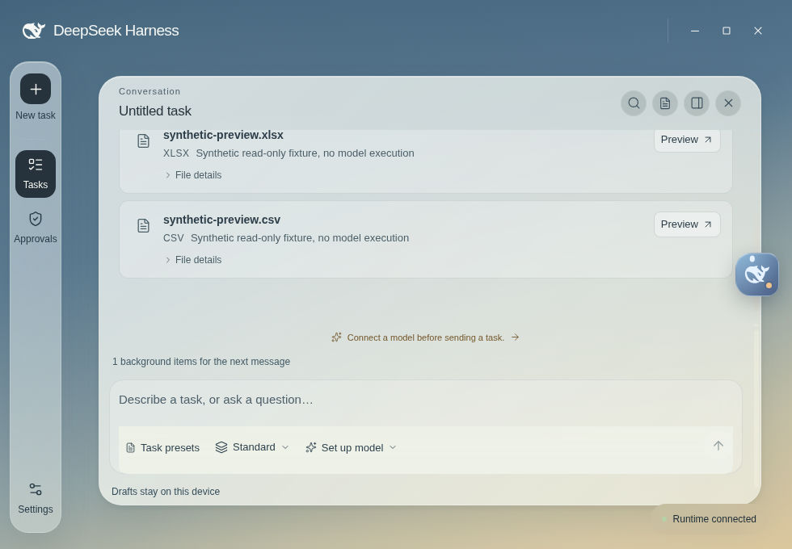
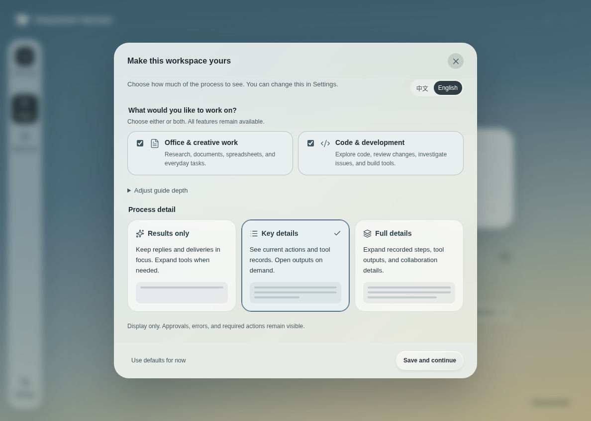
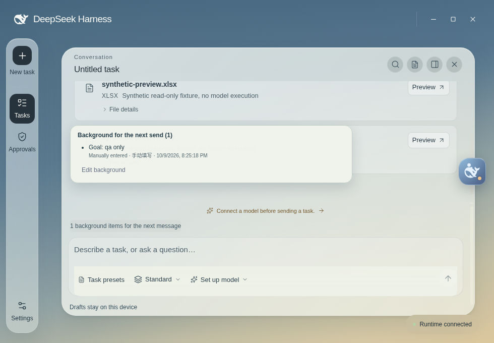
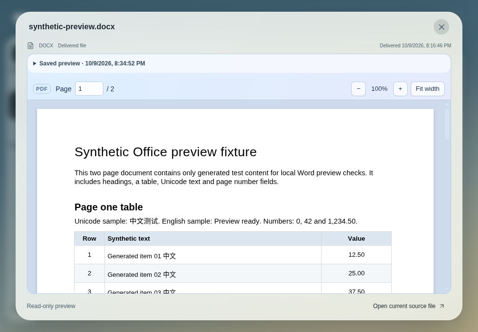

Your task. Your level of detail.
Choose everyday work, development, or both. A skippable tour and three display levels help you settle in. Approvals and errors stay visible in every view.
Results onlyKey detailsFull details
A calmer desktop home for DeepSeek Harness. Start with a request. Keep the conversation, approvals, and files together, all the way to the next step.
Early-stage · App repository is private · No public installer downloads

The work, in one place
Stay with the task instead of switching between fragments. Choose how much detail you see, and keep important decisions within reach.
Choose everyday work, development, or both. A skippable tour and three display levels help you settle in. Approvals and errors stay visible in every view.
Confirm task-scoped goals and decisions, then inspect the next-send preview. Reusable starting points help you prepare research, organization, and review drafts.
Read delivered PDFs, Word, PowerPoint, and spreadsheets locally. Saved previews keep explicit capture boundaries, so an older preview never silently becomes the current file.
A closer look

Edited, sampled captures of the actual Linux Electron app, October 10, 2026. All task and document content is synthetic test data. No live inference or model calls. Playback starts only when you choose it.

Continue with confidence
Drafts belong to their task. Search the current conversation, quote what matters, and return to the latest message when you are ready.
Useful beyond the conversation
Open a delivered file from its real record. Read a PDF, inspect a worksheet, or preview Word and PowerPoint through local conversion. No external document viewer is required.

Clear boundaries
Background is stored on this device for the current task. Only confirmed, enabled entries are included in the next-send preview. Referencing a file does not automatically read it. Model requests send content to your configured provider and may incur charges.
Use official Harness provider setup or the dedicated ChatGPT/Codex authorization flow. Credentials are managed by the local runtime, not an OS-encrypted keychain. This website contains no analytics, tracking scripts, or account forms. GitHub Pages may keep hosting logs.
Get the desktop
The app repository and releases require existing repository access. This website does not grant access or host installers. Open Releases to check availability for your platform.
Apple Silicon + Intel · DMG / ZIP
Build target · Availability in private Releasesx64 · EXE
Build target · Availability in private Releasesx64 · AppImage
Build target · Availability in private ReleasesInitial installers are unsigned test builds; macOS builds are not notarized. Use only a completed release with its manifest and SHA-256 checksums. If your OS blocks a build, stop and report the warning. Do not disable security protections.
No. Desktop Next is an independent community desktop client for DeepSeek Harness. DeepSeek names and marks belong to their respective owners. No official endorsement is implied.
GitHub may show 404 when you are not signed in with an account that has access to the private app repository. The public website repository contains only the website, not the app source or binaries.
No. It shows real native interface states with clearly labeled synthetic task and document fixtures. It is an edited walkthrough, not continuous real-time footage or proof of live provider execution.